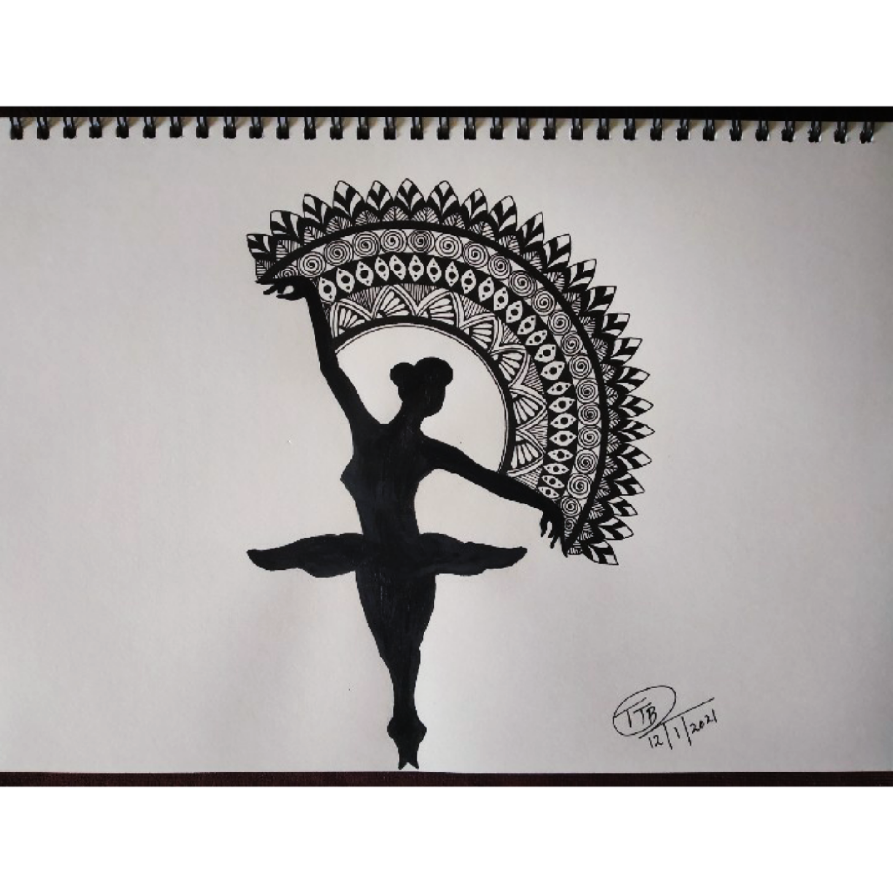

BALLET DANCING
Ballet is an art form created by the movement of the human body.
It is theatrical – performed on a stage to an audience utilizing costumes, scenic design and lighting.
It can tell a story or express a thought, concept or emotion.
Ballet dance can be magical, exciting, provoking or disturbing.
In frame is a ballet dancer dancing with some mandala design between the flow of her hands.
Materials Required :
A-4 size paper.
Any black gel pen
Scale and Pencil.
Compass.
steps one can follow(if needed) :
First take a plain paper and draw a ballet dancer using pecil and then between her two hands make a half circle using compass.
After all this is done start making half circles inside the outer circle and start filling it up with any designs.
After all this is done paint the ballet dancer with black paint and after this the art will be complete.